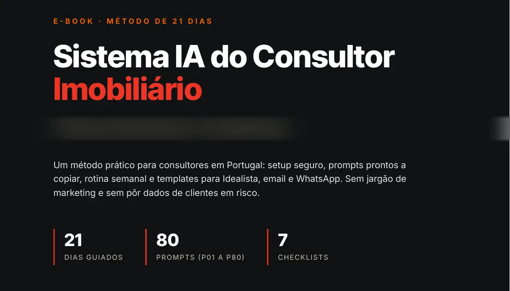
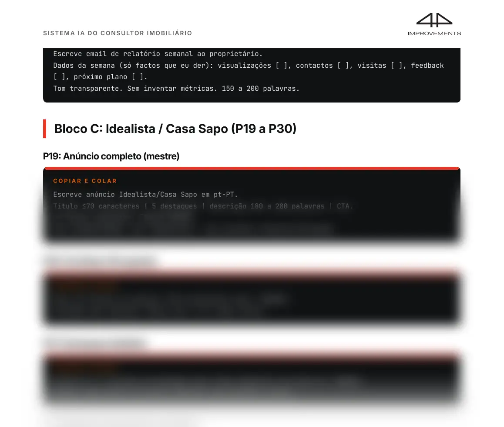
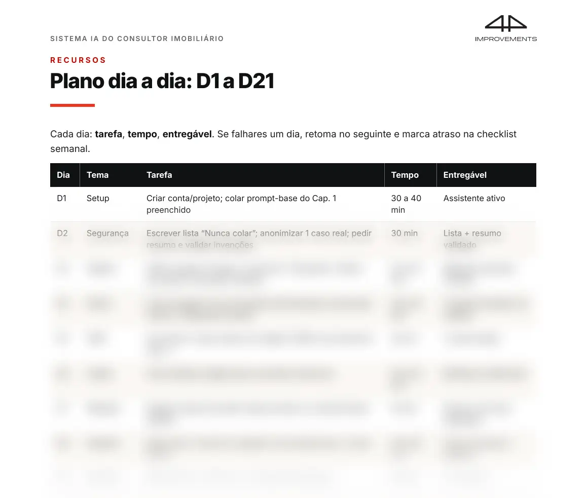

Pagamento único de 37 €. Recebes o PDF por email, normalmente em menos de 30 minutos.
8080prompts
Prontos a copiar, em 8 blocos. Deixas de escrever do zero.
25 a 4525 a 45min por dia
Durante 21 dias. Uma tarefa por dia, feita no teu trabalho real.
77mensagens de follow-up
Do dia 0 ao dia 21, cada uma com uma razão para falar. A última pergunta se podes arquivar.
7 a 87 a 8h por semana
O tempo que o e-book estima que ganhas em emails, anúncios, follow-up e visitas.
As 7 a 8 h são uma estimativa do Cap. 6 e dependem do teu dia e de aplicares o método. Medes tu, com a folha de 4 semanas que vem no e-book.
ChatGPTClaude
Funciona com o ChatGPT grátis ou com o Claude; os planos pagos são opcionais.
São 23h10.
Estás no sofá com o portátil no colo.
Ainda tens um anúncio para pôr no Idealista.
Tens três leads de hoje sem resposta.
E não te lembras se ligaste ao senhor da visita de terça.
Abres o ChatGPT.
Escreves «faz um anúncio de um T2».
Sai um texto bonito, cheio de «oportunidade única».
Não diz a área certa.
Inventa uma varanda que não existe.
Apagas tudo e escreves tu.
Amanhã é igual.
O problema não és tu.
E o problema não é a IA.
O problema é começar do zero todos os dias.
Este e-book dá-te o que falta: uma tarefa por dia durante 21 dias, prompts prontos para o teu trabalho e checklists para não te esqueceres de nada.
Tu mandas nos factos. A IA ajuda na escrita.
Cinco momentos da tua semana. Antes e depois.
Exemplos ilustrativos do dia a dia de um consultor. Não são casos de clientes.
Cena 1 O lead do Idealista que fica para amanhã
Antes
Chega um pedido do Idealista às 9h.
Estás numa visita.
Ao almoço já tens mais quatro.
Respondes a um, depois a outro, cada vez com um texto diferente.
Ao fim do dia, dois ficaram sem resposta.
Depois
Fazes dois blocos curtos por dia para emails e mensagens.
Colas os pedidos sem nomes nem telefones.
O prompt diz-te o que é urgente e dá-te um rascunho de resposta.
Revês em um minuto. Envias.
Para o WhatsApp tens uma primeira mensagem curta, com uma só pergunta.
No e-book: Cap. 2 (triagem de emails e template de resposta a lead novo), Cap. 3 (primeira mensagem de WhatsApp), Bloco B de prompts.
Cena 2 O anúncio escrito à mão à meia-noite
Antes
Angariaste um T3 hoje.
O anúncio fica para a noite.
Abres um anúncio antigo e mudas as palavras.
Demora uma hora.
E no dia seguinte reparas que puseste a área errada.
Depois
Colas a ficha do imóvel no prompt do Idealista e Casa Sapo.
Recebes título, 5 destaques e descrição.
O prompt não inventa: se falta um dado, deixa um espaço para preencheres.
Antes de publicar, passas a checklist de 6 pontos.
Do mesmo texto tiras a versão para WhatsApp e para email.
No e-book: Cap. 3, Bloco C de prompts (Idealista e Casa Sapo), Checklist C (antes de publicar anúncio).
Cena 3 O follow-up que só existia na tua cabeça
Antes
Na semana passada mostraste um T2 a um casal.
Gostaram.
Disseste «falo convosco na sexta».
Sexta passou.
Hoje vês que compraram com outra pessoa.
Depois
Cada lead quente tem uma próxima ação com data no teu CRM.
Tens uma sequência de 7 mensagens, do dia 0 ao dia 21, cada uma com uma razão para falar.
O último contacto pergunta, com educação, se podes arquivar.
Não insistes sem motivo. E não te esqueces.
No e-book: Cap. 5 (porque o follow-up falha, sequência de 7 toques, quando parar), Bloco G de prompts, Checklist E.
Cena 4 A visita preparada no carro
Antes
Estás estacionado à porta do prédio.
Faltam 5 minutos.
Procuras no telemóvel o que o comprador te disse ao telefone.
Depois da visita, as notas ficam num papel no banco do carro.
Depois
Na véspera geras um briefing de 1 página para o telemóvel.
Tem 5 factos do imóvel, 5 perguntas a fazer e 3 dúvidas prováveis com resposta curta.
No fim, colas as tuas notas soltas.
O prompt transforma-as numa nota limpa para o CRM e num email de pós-visita.
No e-book: Cap. 2 (briefing de visita e resumo de notas), Exemplo trabalhado 1, Checklist B (antes de cada visita).
Cena 5 A semana que não para
Antes
Segunda é emails. Terça é emails. Quarta também.
Os anúncios ficam para a noite.
Ao domingo tentas pôr tudo em dia.
Não sabes para onde foi o tempo.
Depois
Tens uma semana tipo: um dia para anúncios, blocos curtos para admin, sexta para fechar a semana.
Quando o dia rebenta, usas o protocolo de 15 minutos.
Apontas as horas numa folha simples durante 4 semanas.
Assim vês, com os teus números, quanto tempo ganhaste.
No e-book: Cap. 6 (mapa das horas, calendário tipo, checklist semanal), Protocolo de 15 minutos, Folha de medição de 4 semanas.
Exemplos ilustrativos. O tempo que ganhas depende de aplicares o método. O e-book estima 7 a 8 horas por semana, e és tu que medes.
O que recebes
O plano do Dia 1 ao Dia 21. Cada dia diz o que fazes, quanto tempo leva e o que tens no fim.
Uma vitória no Dia 1. Em 30 a 40 minutos colas o prompt-base e o teu assistente fica a funcionar em português de Portugal.
80 prompts em 8 blocos. Segurança, emails e CRM, Idealista e Casa Sapo, redes, WhatsApp, angariação, follow-up e rotina.
7 checklists para imprimir. Setup, antes da visita, antes do anúncio, angariação, follow-up, sexta-feira e revisão do mês.
Regras do que nunca colar na IA. NIF, contratos e moradas com nomes ficam de fora. Usas a IA sem pôr dados de clientes em risco.
5 exemplos feitos. Notas de visita para email, anúncio a partir de uma ficha seca, a objeção «o vizinho vendeu por mais», a sequência de 7 mensagens e o relatório da semana ao proprietário.
Frases certas para falar com clientes. Para abrir conversa, fazer as perguntas certas e falar de preço.
A tua semana tipo. Um dia para anúncios, blocos curtos para emails e a sexta para fechar a semana. Para os dias maus, um plano de 15 minutos.
A folha de 4 semanas. Apontas as horas e vês, com os teus números, quanto tempo ganhaste.
Um PDF de 55 páginas. Lês no telemóvel ou imprimes.
Funciona com o ChatGPT grátis ou com o Claude; os planos pagos são opcionais.
No checkout podes juntar dois packs (WhatsApp e Follow-up & Visitas). Não são obrigatórios.

A capa do e-book

O prompt do anúncio para o Idealista (P19)

O plano do Dia 1 ao Dia 21O checklist antes de publicar um anúncio
Sou o Pedro Ferreira, sócio da 4Improvements. Trabalhamos com IA para o imobiliário em Portugal.
Escrevi este e-book para o consultor que faz quase tudo sozinho. Em português de Portugal, com as tarefas do teu dia: emails, Idealista, WhatsApp, visitas e follow-up.
Não tem casos inventados nem depoimentos. Tem o método e os textos.
Mais de 1000 compras em ofertas semelhantes da 4Improvements.
É só um PDF de 55 páginas, MAS tem um prompt pronto para as tarefas que repetes todas as semanas.
O lead do Idealista. O anúncio do T2. A mensagem de follow-up. As notas da visita. Abres, colas os factos e revês.
🔒 Pagamento seguro na Stripe. Recebes o PDF por email, normalmente em menos de 30 minutos. Dúvidas? 4improvementsportugal@gmail.com
ChatGPTClaude
Funciona com o ChatGPT grátis ou com o Claude; os planos pagos são opcionais.
Perguntas frequentes
Preciso de pagar o ChatGPT?
Não. Funciona com o ChatGPT grátis ou com o Claude; os planos pagos são opcionais.
Tenho mesmo tempo para isto?
Cada dia leva 25 a 45 minutos na maioria dos dias. Alguns dias pedem 60. Usas o teu trabalho real, não estudas à parte.
E os dados dos meus clientes?
O primeiro capítulo é sobre isso. Tens a lista do que nunca colar e uma forma simples de tirar nomes e contactos antes de usar a IA. Prepara-te antes de começar.
A IA vai inventar coisas no anúncio?
Os prompts dizem à IA para não inventar áreas, preços nem certificados. Se falta um dado, fica um espaço para preencheres. A decisão final é sempre tua.
Isto promete vendas?
Não. Dá-te um método de trabalho e textos prontos a usar. O resto continua a ser o teu trabalho.
Como recebo o e-book?
Pagas no Stripe. Recebes o PDF por email, normalmente em menos de 30 minutos. É um pagamento único, não é uma subscrição.
Amanhã há mais leads, mais anúncios e mais visitas.
P.S. Se já tens uma equipa grande com processos fechados, isto não é para ti. É para o consultor que faz quase tudo sozinho e quer ganhar tempo na semana.
Autor: Pedro Ferreira · 4Improvements · pt-PT · produto digital